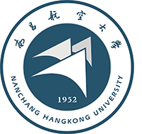
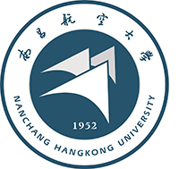

我的学校——南昌航空大学
南昌航空大学是一所以工为主，工理文管经法教艺等学科协调发展的多科性大学。学校始终坚持“育人为本，质量立校，人才强校，开放兴校，特色发展”的办学理念，扎实推进内涵建设，稳步提高教学质量，是教育部本科教学工作水平评估优秀高校。
学生科技创新能力不断增强。近五年，我校学生共获省部级以上科技竞赛奖4800余项，受理专利743件、授权385件，发表论文1300余篇，累计获得“国家级、省级大学生创新创业训练计划”项目255项。在2016-2020年全国普通高校大学生竞赛排行榜（本科）中以奖项数312项排名全国第77位(较上一轮前进15位），位居省内高校第二。在首次发布的全国普通高校大学生竞赛排行榜五轮总排行榜（本科）中，我校以奖项数370项排名全国第103位，亦位居省内高校第二。曾获“挑战杯”全国大学生课外学术科技作品竞赛一等奖、“互联网+”大学生创新创业大赛银奖、中国国际飞行器设计挑战赛总决赛暨科研类全国航空航天模型锦标赛一等奖、全国大学生光电设计竞赛全国一等奖金奖、全国大学生机器人大赛RomoMaster机甲大师赛全国赛总冠军、全国大学生数学建模竞赛一等奖、“西门子杯”中国智能制造挑战赛特等奖、ACM国际大学生程序设计大赛一等奖、中国教育机器人大赛一等奖、全国大学生电子商务“创新、创意及创业”挑战赛一等奖等荣誉。“天宫开悟”项目获“青年红色筑梦之旅”实践活动新锐创意奖；大学生科技创新团队“环境光催化及资源循环利用团队”荣膺“小平科技创新团队”称号；大学生创新创业基地获批江西省第二批大众创业万众创新示范基地，并确定为全国“大学生KAB创业教育基地”。相继涌现出“全国大学生创业英雄”朱丁亮、“第十二届中国青少年科技创新奖”王璐明，第二届“洪城创业故事汇“中周涛挺进六十强并荣获“洪城创业故事汇榜样人物”称号，江西高校首届“大学生创新创业标兵”戴维等一批青年创新创业先进典型。
（数据截止2021年11月）
1.办学历史：
南昌航空大学创建于1952年，是全国首批学士学位授予权单位。1985年开始培养硕士研究生，1990年获硕士学位授予权。先后隶属于航空工业部、航空航天工业部、中国航空工业总公司，1999年开始实行中央与地方共建、以地方政府管理为主的管理体制，是江西省人民政府与国家国防科技工业局共建的高等学校。2.办学特色：
学校秉承“日新自强、知行合一”的校训、“勤奋、文明、求实、创新”的校风和“团结自强、拼搏向上”的昌航精神，坚持“立足江西、面向全国，服务地方、服务国防”的服务面向，以航空国防需求为导向，积极服务国家航空工业和江西地方经济社会发展，拥有航空、国防类及相关专业27个，占学校所有专业的38%，拥有飞行器设计与工程、飞行器动力工程、飞行器制造工程、飞行技术、航空服务艺术与管理等航空特色专业。目前，学校已经初步建成工科优势明显、航空特色鲜明的本科高校。3.办学条件：
学校位于“物华天宝，人杰地灵”的英雄城——南昌。校园环境优美，拥有前湖校区、上海路校区、共青城校区等3个校区，占地面积3500余亩。校舍建筑面积102万平米。拥有教学、科研设备4.7万多台套，仪器设备总值约5.7亿元。图书馆纸质馆藏资料215.82万册，中外文期刊380种，电子期刊近5.86万种，电子图书348.14万册，中外文数字资源数据库46个，阅览位4500座。体育活动场地面积达15.5万平米。4.机构设置：
学校设有材料科学与工程学院、环境与化学工程学院、航空制造工程学院、信息工程学院、外国语学院、飞行器工程学院（航空发动机学院）、数学与信息科学学院、测试与光电工程学院、经济管理学院、体育学院、土木建筑学院、艺术与设计学院、马克思主义学院、文法学院、航空服务与音乐学院、软件学院、通航学院（民航学院）等17个专业学院，有国际教育学院、继续教育学院、创新创业实践学院等3个管理型学院，以及1个独立学院科技学院。学校拥有“江西省测试技术与控制工程研究中心”博士后科研工作站、“江西省航空材料工程技术研究中心”博士后创新实践基地、1个国家级工程实验室、1个国家级工程研究中心、30个省（部）级重点实验室（研究中心）和省级重点基地。拥有2个国家级实验教学示范中心，9个省级实验教学示范中心。5.学科专业：
具有17个硕士学位授权一级学科点，11个硕士专业学位授权点。拥有环境科学与工程、航空宇航科学与技术和仪器科学与技术三个江西省一流学科，5个国防特色学科。现有70个本科专业。其中17个国家级一流本科专业建设点,5个国家级特色专业，1个国家级综合改革试点专业，9个江西省一流本科专业建设点,8个省级特色专业，6个省级综合改革试点专业,4个专业通过教育部工程教育认证。学校入选教育部第二批卓越工程师教育培养计划实施高校，获批6个国家级卓越工程师教育培养计划试点专业，6个江西省卓越工程师教育培养计划试点专业。学校材料科学、工程学、化学等3个学科进入ESI全球学科排名前1%，步入国际高水平学科行列。6.人才培养：
学校具有推荐优秀应届本科毕业生免试攻读硕士研究生资格。与北京航空航天大学、西北工业大学、北京航空材料研究院、湖南大学、南京航空航天大学、北京师范大学等高校和科研院所联合培养博士生。学校拥有国家级教学团队1个、国家精品课程1门、国家级双语教学示范课程1门、国家级一流课程3门；获国家级教学成果奖5项、国家级规划教材8部、省级教学成果奖91项、省（部）级优秀教材40部。拥有3个校企共建的国家级工程实践教育中心。获国家级新工科研究与实践项目2个、教育部高教司产学合作协同育人项目97项。拥有校外实践（实习）基地254个，其中与中国南方航空工业（集团）有限公司联合申报的工程实践教育中心获批国家级大学生校外实践教育基地。学校国防生培育的“昌航模式”成功获批为国家级人才培养模式创新实验区，国防生培育的经验做法被教育部、中国人民解放军总政治部联合发文向全国推广。学生科技创新能力不断增强。近五年，我校学生共获省部级以上科技竞赛奖4800余项，受理专利743件、授权385件，发表论文1300余篇，累计获得“国家级、省级大学生创新创业训练计划”项目255项。在2016-2020年全国普通高校大学生竞赛排行榜（本科）中以奖项数312项排名全国第77位(较上一轮前进15位），位居省内高校第二。在首次发布的全国普通高校大学生竞赛排行榜五轮总排行榜（本科）中，我校以奖项数370项排名全国第103位，亦位居省内高校第二。曾获“挑战杯”全国大学生课外学术科技作品竞赛一等奖、“互联网+”大学生创新创业大赛银奖、中国国际飞行器设计挑战赛总决赛暨科研类全国航空航天模型锦标赛一等奖、全国大学生光电设计竞赛全国一等奖金奖、全国大学生机器人大赛RomoMaster机甲大师赛全国赛总冠军、全国大学生数学建模竞赛一等奖、“西门子杯”中国智能制造挑战赛特等奖、ACM国际大学生程序设计大赛一等奖、中国教育机器人大赛一等奖、全国大学生电子商务“创新、创意及创业”挑战赛一等奖等荣誉。“天宫开悟”项目获“青年红色筑梦之旅”实践活动新锐创意奖；大学生科技创新团队“环境光催化及资源循环利用团队”荣膺“小平科技创新团队”称号；大学生创新创业基地获批江西省第二批大众创业万众创新示范基地，并确定为全国“大学生KAB创业教育基地”。相继涌现出“全国大学生创业英雄”朱丁亮、“第十二届中国青少年科技创新奖”王璐明，第二届“洪城创业故事汇“中周涛挺进六十强并荣获“洪城创业故事汇榜样人物”称号，江西高校首届“大学生创新创业标兵”戴维等一批青年创新创业先进典型。
7.科学研究：
近年来荣获国家技术发明奖二等奖1项，国家科技进步奖1项（参与），何梁何利基金科学与技术创新奖1项，全国创新争先奖1项以及省部级社科成果奖20余项、省部级科技成果奖90多项。在国内外学术刊物上发表论文5000多篇，出版论著180余部，教材642部。获批国家自然科学基金重点项目、国家杰出青年基金、国家优秀青年基金、其他类别国家自然科学基金及国家重要科技计划项目等260余项，国家社科基金重大项目1项以及其他国家级社科项目近20项。承担江西省科技重大专项、江西省社科重大招标项目、行业科技项目等省部级科研项目800多项。8.师资队伍：
学校现有教职工近2115人，其中专任教师近1600人；具有博士和硕士学位教师占专任教师总数的92%；有双职双聘中国科学院院士和中国工程院院士7人；有国家杰出青年科学基金获得者、国家优秀青年科学基金获得者、国家百千万人才工程人选、中国科学院“百人计划”等国家级人才42人次；科技部中青年科技创新领军人才、教育部“新世纪优秀人才支持计划”、江西省“双千计划”人才、江西省“赣鄱英才555工程”人选、“井冈学者”特聘教授、“青年井冈学者奖励计划”人选、江西省百千万人才工程人选、江西省主要学术与学科带头人、江西省文化名家等省部级人才334人。9.招生就业工作：
学校面向全国29个省、直辖市、自治区招生，除高考综合改革省份（北京、上海等十四省） 外大多在一本批次招生，现有全日制在校生2.3万余人，其中本科生2万余人，研究生2800余人。建校以来共培养各类毕业生17万余名。学校与航空、航发、商飞、航天、民航、通航等企事业单位和近30余个地方政府人力资源部门建立了长期合作关系。每年有30%以上毕业生服务于国防军工企事业单位和各大民航、通航、商飞公司。学校连续获江西省“普通高校毕业生就业工作先进集体”、“普通高校毕业生就业工作评估优秀等级”等荣誉。10.国际合作：
学校大力推进国际合作与交流工作，与美国、英国、澳大利亚、乌克兰等20个国家的70多所高校建立了稳定的校际合作关系；与英国、澳大利亚、美国、爱尔兰高校共同举办本科层次的中外合作办学项目，目前在校中外项目生突破1600人。学校大力发展来华留学教育，是“中国政府奖学金”来华留学生培养院校，开设了航空工程（含航空维修）、工商管理、土木工程和计算机技术等4个本科全英文授课专业和多个研究生中英文授课专业。近年来学校不断优化留学生培养结构，提升留学生培养质量，实现了留学生从本科教育、硕士培养和博士联合培养发展，助推了学校“双一流”建设和国际化，学校有各类留学生300多人，先后荣获江西省和全国来华留学先进集体荣誉称号。 我校积极开展学生出国（境）交流工作，年均出境交流学生300余人，其中公派出国（境）100余人，先后获批国家公派《赴乌克兰专业人才培养计划》《优秀本科生交流计划》《国家建设高水平公派研究生项目》《赴俄白乌专业人才培养计划》《促进与俄白乌国际合作培养项目》《与匈牙利政府互换奖学金计划》等出国留学资助项目。受资助人数和规模居全省前列。11.民生工作：
学校注重民生工作，推行教职工“健康工程”，树立“以学生为中心”的资助育人理念，严格贯彻落实国家各项资助政策，不断健全完善学生教育资助救助制度。根据学生家庭经济实际情况，学校开展全方位、全时段、全覆盖的资助工作。除国家奖学金、国家励志奖学金、国家助学金、国家助学贷款、服兵役高等学校学生国家教育资助等形式外，学校还有“绿色通道”、勤工助学岗、临时困难补助、困难学生走访慰问、专业技能提升资助等其他资助项目。此外，学校设有优秀学生奖学金、创新创业实践奖学金、各类社会奖助学金近二十项。形成国家资助、学校奖助、社会捐助、学生自助“四位一体”的发展型资助体系，构建物质帮助、道德浸润、能力拓展、精神激励有效融合的长效机制，形成“解困、育人、成才、回馈”的良性循环。12.社会声誉：
2017年,学校被教育部评为“国防教育特色学校”、2018年荣获江西省五一劳动奖状; 学校曾荣获全国模范职工之家、全国军训工作先进单位、全国高校辅导员联盟单位，全国大学生心理健康教育工作先进集体、2020年江西省辅导员素质能力大赛优秀组织单位、江西省高校心理健康教育与咨询中心示范学校、江西省文明单位、江西省先进基层党组织、江西省校园建设先进单位、江西省学生公寓管理先进单位、江西省党建和思想政治工作先进单位、全省国防科技工业新闻宣传工作先进单位、国防科技工业全国军工文化教育基地等荣誉称号。学校连续七年获全省平安建设（综治工作）先进单位，连续四年被评为“江西省平安校园”。学校于2015年、2016年、2017年、2019年、2020年共5次荣获“全省共青团工作优秀单位”称号，荣膺全国“五四红旗团委”和全省“五四红旗团委”称号，校学生会获评全省“五星级学生会”，“天宫开悟”航空航天科普精准教育扶贫项目荣获全国青年志愿服务项目大赛金奖。2017年、2019年荣获江西省大型仪器开放共享先进单位，荣获2019-2020年实验室与设备管理工作先进单位。（数据截止2021年11月）
南昌航空大学
汉口航空工业学校 （52年3月 --- 53年9月）
中南第一工业学校 （53年9月 --- 55年9月）
南昌工业学校 （55年9月 --- 56年2月）
南昌航空工业学校 （56年2月 --- 60年6月）
南昌航空工业专科学校 （60年6月 --- 63年6月）
南昌航空工业学校 （63年6月 --- 69年6月）
改为工厂 （69年6月 --- 72年4月）
南昌航空工业学校 （72年4月 --- 78年4月）
南昌航空工业学院 （78年4月 ---07年2月）
南昌航空大学 （ 07年3月 --- 至今）
汉口航空工业学校 （52年3月 --- 53年9月）
中南第一工业学校 （53年9月 --- 55年9月）
南昌工业学校 （55年9月 --- 56年2月）
南昌航空工业学校 （56年2月 --- 60年6月）
南昌航空工业专科学校 （60年6月 --- 63年6月）
南昌航空工业学校 （63年6月 --- 69年6月）
改为工厂 （69年6月 --- 72年4月）
南昌航空工业学校 （72年4月 --- 78年4月）
南昌航空工业学院 （78年4月 ---07年2月）
南昌航空大学 （ 07年3月 --- 至今）
校训：
“自强”一词出自《易经》，《易经》云：“天行健，君子以自强不息 ”、“地势坤，君子以厚德载物”。因此，“自强”既饱含内在涵养上的修身立德，又包含外在行为上的刚强自立；既是一种自我激励、努力向上的精神力量，又是一种追求卓越、永争一流的时代精神。《怀南子•修务训》中说：“不自强而成功者，天下未之有也。”“自强”与“激情进取，志在超越”的航空精神是一致的，她告诫师生既要像浩瀚天宇那样刚健有力、运行不止，又要像大地那样广袤厚实而能承载包容万物，不断修身、学习、努力、创新，丰富自己。
“知行合一” 是明朝思想家王阳明所提。他强调人的活动是有目的、有意识的，即“致良知”，并主张“求理于吾心”，即“知行合一”。王阳明的“行”范围很广，包括了学、问、思、辩，这在《中庸》里是“知”的四个侧面，虽然他用主体包容了客体，将客体的独立性、自然性和物质性否定了，但其教育思想中有许多值得学习借鉴的地方：第一，立志、勤学、改过、责善；第二是独立的治学精神和能力；第三是循序渐进与因材施教；第四是强调身体力行。这些教育思想对今天大学生的学习有很好的借鉴意义。“知行合一”符合我校一以贯之的办学方针和人才培养模式。1952年1月，国家航空局在筹建全国航空学校时，对包括汉口航空工业学校在内的航空学校的办学方针确定为“理论与实践相结合，教育为生产服务”。1954年开始，学校聘请了苏联专家，他们十分重视实践性教学环节，进一步巩固了理论和实践相结合的人才培养模式，并逐渐建成了一个在全国颇具影响力和特色的实习基地。1998年教育部本科教学工作合格评价专家组对我校“工程教育与工程训练相结合”的办学模式给予高度评价。随着学校工、理、文、管、经、法、教等学科协调发展的多科性教学研究型航空大学的初步形成，学校进一步理顺思路，确立了“理论教学与实践训练相结合”的人才培养模式，更加要求遵循表里如一，学以致用，知行合一的理念。
校风：
校徽：

1、图案中心为三个飞行器，表示航空院校，有鲜明的航空特征。
2、三个飞行器表明了我校办学校、办学院、办大学的三次创业。
3、三个飞行器表明了学校“和谐共进”的时代特征，体现了南昌航空大学的办学理念和奋斗精神。
4、三个飞行器也寓意学校经历了湖北汉口、江西南昌上海路、红角洲前湖三个校区。
5、1952年为建校时间。外环上部为南昌航空大学中文名称，下部为英文全称。
6、图案简洁、明快、向上，有动感，并有层次，纪录了学校的发展轨迹，象征着学校的发展与腾飞。
校旗：
日新自强，知行合一
“日新”之义最早出自《尚书》，《易经》亦云“日新之谓盛德，生生之谓易”，后来《大学》引用《尚书》之意明确指出：“苟日新，日日新，又日新。” 天地之大德曰生，人生之大德曰创。意即人道要跟着天道变，不断追求，逐渐接近事物的内在规律。学校亦然，必须吐故纳新，与时俱进，勇于探索，止于至善。“日新”即是要求受教育者有强烈之进取精神。近代教育家张伯苓先生一直主张办教育要遵循“日新月异”的精神，并解释道：“所谓的日新月异，不但每个人要接受新事物，而且还要能成为新事物的创始者；不但能赶上新时代，而且还要能走在时代的前列。” 用今天的话来解释，就是受教育者的时代使命，是不断改革、不断前进、永攀高峰，面向祖国、面向世界、面向未来，奋勇走在世界发展大潮的前沿，为建设繁荣富强的伟大祖国而奋进。“自强”一词出自《易经》，《易经》云：“天行健，君子以自强不息 ”、“地势坤，君子以厚德载物”。因此，“自强”既饱含内在涵养上的修身立德，又包含外在行为上的刚强自立；既是一种自我激励、努力向上的精神力量，又是一种追求卓越、永争一流的时代精神。《怀南子•修务训》中说：“不自强而成功者，天下未之有也。”“自强”与“激情进取，志在超越”的航空精神是一致的，她告诫师生既要像浩瀚天宇那样刚健有力、运行不止，又要像大地那样广袤厚实而能承载包容万物，不断修身、学习、努力、创新，丰富自己。
“知行合一” 是明朝思想家王阳明所提。他强调人的活动是有目的、有意识的，即“致良知”，并主张“求理于吾心”，即“知行合一”。王阳明的“行”范围很广，包括了学、问、思、辩，这在《中庸》里是“知”的四个侧面，虽然他用主体包容了客体，将客体的独立性、自然性和物质性否定了，但其教育思想中有许多值得学习借鉴的地方：第一，立志、勤学、改过、责善；第二是独立的治学精神和能力；第三是循序渐进与因材施教；第四是强调身体力行。这些教育思想对今天大学生的学习有很好的借鉴意义。“知行合一”符合我校一以贯之的办学方针和人才培养模式。1952年1月，国家航空局在筹建全国航空学校时，对包括汉口航空工业学校在内的航空学校的办学方针确定为“理论与实践相结合，教育为生产服务”。1954年开始，学校聘请了苏联专家，他们十分重视实践性教学环节，进一步巩固了理论和实践相结合的人才培养模式，并逐渐建成了一个在全国颇具影响力和特色的实习基地。1998年教育部本科教学工作合格评价专家组对我校“工程教育与工程训练相结合”的办学模式给予高度评价。随着学校工、理、文、管、经、法、教等学科协调发展的多科性教学研究型航空大学的初步形成，学校进一步理顺思路，确立了“理论教学与实践训练相结合”的人才培养模式，更加要求遵循表里如一，学以致用，知行合一的理念。
校风：
勤奋、文明、求实、创新
校风是学校风气的总称，是学校治校、治教、治学的综合体现，是大学精神的具体化和外在表现，包括学风、教风以及学校积淀的传统文化精神和学术探索所形成的风气和氛围。我们学校创建于1952年的汉口航空工业学校，经历了中专、大专、大学三个历史发展阶段和汉口校区、南昌上海路校区、前湖校区三次艰苦创校过程，至今有近60年的历史。中专时期即形成了“朴实、勤奋、严谨”的优良传统。1985年，学校总结办学历程中形成的优良传统，经12月的教代会讨论并通过，确定了“勤奋、文明、自强、求实”的校风。“八字校风”既反映了全校师生勤奋严谨的治学态度和团结文明的道德风尚，也反映了学校自强自立奋斗拼搏的进取精神与尊重科学追求真理的求实态度。1991年，“八字校风”被明确写入学校“八五”规划之中，使之深入人心。 进入90年代，学校加强了精神文化的研究和探索，1995年11月，学校党委制定并颁发了《关于进一步加强校园文化建设的若干意见》，提出并倡导“循规、重人、求实”的昌航哲学、“奉献不为索取，奉献大于索取”的昌航人价值观、“团结自强、拼搏向上”的昌航精神、“治学严谨，诲人不倦”的教风、“勤奋好学、实事求是”的学风、“廉洁、奉献、务实、进取”的干部作风和“四有四爱”[有理想、爱祖国，有道德、爱集体，有文化，爱专业（岗位），有纪律、爱自己（自尊自爱）]的昌航道德风尚。为迎接21世纪的挑战，培育创新精神，1999年学校年度党代会又将“八字校风”修改为“勤奋、文明、求实、创新”。校徽：

1、图案中心为三个飞行器，表示航空院校，有鲜明的航空特征。
2、三个飞行器表明了我校办学校、办学院、办大学的三次创业。
3、三个飞行器表明了学校“和谐共进”的时代特征，体现了南昌航空大学的办学理念和奋斗精神。
4、三个飞行器也寓意学校经历了湖北汉口、江西南昌上海路、红角洲前湖三个校区。
5、1952年为建校时间。外环上部为南昌航空大学中文名称，下部为英文全称。
6、图案简洁、明快、向上，有动感，并有层次，纪录了学校的发展轨迹，象征着学校的发展与腾飞。
校旗：